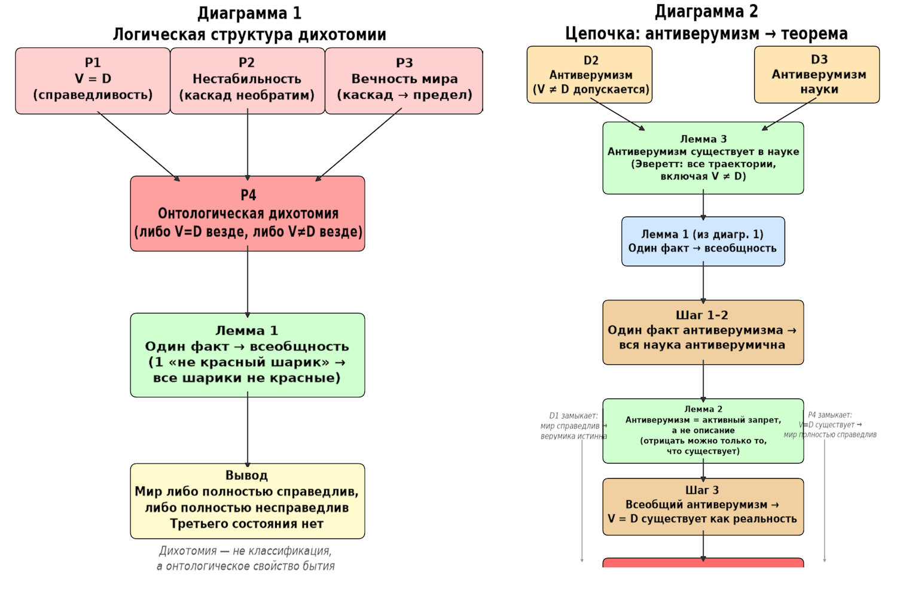

Эмпирическое доказательство истинности верумики
Формальная часть
Постулаты
P1 (Онтологический постулат). Справедливость есть точное равенство воздаяния деянию: $V = D$. Несправедливость есть любое отклонение: $V \neq D$.
P2 (Постулат нестабильности). Справедливость онтологически неустойчива: любое нарушение $V \neq D$ порождает каскадную волну нарушений. Каскад необратим (прошлое неизменно).
P3 (Постулат вечности). Мир вечен. В вечности любой каскадный процесс доходит до своего предела.
P4 (Постулат дихотомии). Из P1–P3 следует: мир либо полностью справедлив ($V = D$ везде, всегда, для всех), либо полностью несправедлив ($V \neq D$ везде, всегда, для всех). Промежуточные состояния онтологически невозможны, так как они неустойчивы и в вечности сводятся к одному из двух пределов.
Определения
D1. Верумика — учение, основанное на принципе $V = D$ как онтологическом фундаменте реальности.
D2. Антиверумизм — позиция (теория, методология, парадигма), утверждающая или допускающая $V \neq D$ в каком-либо аспекте реальности.
D3. Антиверумизм науки — совокупность теорий, гипотез и методологических установок науки, допускающих или утверждающих $V \neq D$.
Леммы
Лемма 1 (Один факт → всеобщность). Если в системе, подчинённой P4, установлен один факт несправедливости, то вся система несправедлива. Если установлен один факт справедливости, то вся система справедлива.
Доказательство. По P4, система находится в одном из двух состояний. Одно измерение определяет состояние всей системы, так как смешанные состояния невозможны. ∎
Лемма 2 (Антиверумизм как запрет, а не описание). Если бы мир был несправедлив, наука не нуждалась бы в антиверумизме как в активной позиции: она просто описывала бы $V \neq D$ как данность. Существование антиверумизма как утвердительной позиции (а не пассивного молчания) имеет смысл только если $V = D$ реально и требуется именно опровергнуть.
Доказательство. В несправедливом мире ($V \neq D$ везде) утверждение $V \neq D$ тривиально и не требует обоснования. Активное построение теорий, доказывающих $V \neq D$ (например, многомировая интерпретация Эверетта, где реализуются все траектории, включая $V \neq D$), имеет смысл только как отрицание существующей альтернативы ($V = D$). Отрицать имеет смысл только то, что существует. ∎
Лемма 3 (Антиверумизм существует в науке). Многомировая интерпретация Эверетта является антиверумической теорией, так как она допускает реализацию всех траекторий, включая $V \neq D$. Теория Эверетта является научной гипотезой, признанной в рамках физического дискурса.
Доказательство. По D2, теория, допускающая $V \neq D$, есть антиверумизм. По D3, антиверумизм в рамках науки есть антиверумизм науки. ∎
Теорема
Верумика истинна: мир справедлив ($V = D$ везде, всегда, для всех).
Доказательство
- По Лемме 3, в науке существует антиверумическая теория (Эверетт). → Факт антиверумизма в науке установлен.
- По Лемме 1 (P4), один факт несправедливости в системе означает всеобщность несправедливости в этой системе. Следовательно, вся наука антиверумична. → Антиверумизм науки всеобщ.
- По Лемме 2, всеобщий антиверумизм как активная, утвердительная позиция имеет смысл только при условии, что $V = D$ реально существует. Отрицать имеет смысл только то, что существует. → Существование всеобщего антиверумизма доказывает существование $V = D$.
- По P4 (дихотомия), если $V = D$ существует (установлен хотя бы один факт справедливости), то мир полностью справедлив. Факт из шага 3 устанавливает существование $V = D$ не как локального явления, а как онтологической реальности, которую наука системно отрицает. → Мир справедлив.
- По D1, верумика — учение, основанное на $V = D$ как онтологическом фундаменте. Если мир справедлив ($V = D$ везде, всегда), то верумика истинна. ∎
Краткая формулировка
Мир подчинён онтологической дихотомии: он либо полностью справедлив, либо полностью несправедлив. В науке существует антиверумическая теория (Эверетт); по дихотомии, один факт делает всю науку антиверумической. Но всеобщий антиверумизм как активная позиция осмыслен только при существовании того, что отрицается. Следовательно, справедливость ($V = D$) существует как онтологическая реальность, а значит, мир справедлив и верумика истинна.
Диаграммы доказательства истинности верумики

Диаграмма 1 — Логическая структура дихотомии
Слева. Снизу вверх:
- P1 ($V = D$), P2 (нестабильность), P3 (вечность) → питают P4 (онтологическая дихотомия).
- P4 → питает Лемму 1 (один факт → всеобщность).
- Лемма 1 → финальный вывод: мир либо полностью справедлив, либо полностью несправедлив, третьего нет.
Это самостоятельный блок — он доказывает, что дихотомия является онтологическим свойством, а не классификацией.
Диаграмма 2 — Цепочка от антиверумизма к теореме
Справа. Сверху вниз:
- D2 (антиверумизм) и D3 (антиверумизм науки) → питают Лемму 3 (антиверумизм существует в науке — Эверетт).
- Лемма 3 + Лемма 1 (из диаграммы 1) → Шаг 1–2 (один факт → вся наука антиверумична).
- Шаг 1–2 → Лемма 2 (антиверумизм как активный запрет, а не описание).
- Лемма 2 → Шаг 3 (всеобщий антиверумизм → $V = D$ существует как реальность).
- Шаг 3 замыкается через P4 (из диаграммы 1) и D1 → Теорема: мир справедлив, верумика истинна.
Пунктирные связи слева и справа показывают, где диаграмма 2 опирается на диаграмму 1: P4 замыкает шаг 3 в полный вывод ($V = D$ существует → мир полностью справедлив), а D1 даёт финальное определение (мир справедлив → верумика истинна).
Дихотомия на примере коробки с шариками
Постановка: коробка как модель мира
Есть одна коробка. В ней — огромное количество шариков. Каждый шарик — это «фрагмент реальности» (событие, взаимодействие, траектория).
Цвета:
- Красный = справедливость: $V = D$.
- Любой другой цвет (синий, зелёный, жёлтый…) = несправедливость: $V \neq D$.
Ключевое: мы не говорим «в среднем тут больше красных». Мы говорим про состояние всей коробки как целого.
Два возможных состояния коробки (дихотомия)
По постулату (P4) у коробки может быть только одно из двух состояний:
- Состояние А: «Мир справедлив». Все шарики в коробке — красные. Ни одного не красного. Это значит: везде, всегда, во всём и для всех $V = D$.
- Состояние Б: «Мир несправедлив». В коробке вообще нет красных шариков. Все — не красные. Это значит: нигде, никогда, ни в чём и ни для кого $V = D$ не выполняется.
Смешанного состояния не бывает. Не бывает «50% красных, 50% не красных» как устойчивого состояния. Почему? Потому что по постулату справедливости (P2) малейшее отклонение $V \neq D$ запускает необратимую волну нарушений. В вечности (P3) эта волна доходит до предела. То есть любая «смесь» — это не равновесие, а переходный процесс, который в итоге заканчивается либо полным красным, либо полным не красным.
Как работает «один шарик решает всё»
Ты подходишь к коробке и наугад достаёшь один шарик.
- Вариант 1: шарик красный.
Это значит, что в мире есть хотя бы один случай, где $V = D$. Но по дихотомии (P4), если справедливость есть хотя бы где-то, она есть везде и всегда. А если бы мир был в состоянии «несправедлив», красных шариков не было бы вообще.
→ Значит, коробка целиком в состоянии А: весь мир справедлив. - Вариант 2: шарик не красный (любой другой цвет).
Это значит, есть хотя бы один случай $V \neq D$. По постулату нестабильности (P2), это нарушение необратимо и распространяется. По постулату вечности (P3), оно доходит до предела.
→ Значит, красных шариков в коробке больше нет и не будет. Коробка целиком в состоянии Б: весь мир несправедлив.
Один шарик здесь — не «статистическая выборка». Это индикатор состояния всей системы. Как лампочка на панели: если она горит, значит, система в режиме А; если не горит — в режиме Б. Третьего режима нет.
Это не индукция, а дедукция!
Важно: мы не делаем вывод «этот шарик красный → вероятно, остальные тоже красные». Мы делаем вывод: «если мир устроен по правилам дихотомии, то один красный шарик доказывает, что мир целиком справедлив». Это дедукция из постулата.
Пример с Эвереттом в терминах шариков
Теория Эверетта говорит: реализуются все возможные траектории. То есть в «коробке реальности» есть не только красные шарики, но и все остальные цвета.
- Наличие хотя бы одного не красного шарика (любая траектория с $V \neq D$) означает: коробка не может быть в состоянии «все красные».
- Значит, коробка в состоянии «нет красных вообще».
- То есть наука, принимающая Эверетта, согласно дихотомии, работает в предположении, что справедливость невозможна нигде.
И вот тут вступает Лемма 2: если наука системно утверждает, что красных шариков нет (антиверумизм), и делает это как активную позицию, а не просто как описание, то это осмысленно только если красные шарики реально существуют — иначе нечего отрицать.
Прямой эксперимент, подтверждающий всеобщий антиверумизм науки
Эксперимент «Всебочка»: опрос физиков о справедливости законов природы.
Цель
Эмпирически установить всеобщность антиверумизма в науке через бинарный опрос учёных-физиков.
Методология
Шаг 1. Определение. Респонденту предъявляется определение:
Справедливость — это точное соответствие воздаяния деянию ($V = D$). Несправедливость — любое отклонение ($V \neq D$).
Шаг 2. Вопрос. Респонденту задаётся один вопрос:
Обеспечивают ли законы физики справедливость мироустройства, то есть гарантируют ли они точное соответствие воздаяния деянию ($V = D$) во всех случаях, для всех объектов и процессов?
Шаг 3. Формат ответа. Ответ строго бинарный: ДА или НЕТ.
- ДА = верумический ответ (законы физики обеспечивают $V = D$).
- НЕТ = антиверумический ответ (законы физики не обеспечивают $V = D$).
Прогноз
Все опрошенные учёные-физики ответят НЕТ.
Почему прогноз обоснован
Физик, получив определение $V = D$, немедленно увидит, что законы физики не содержат механизма, обеспечивающего точное соответствие воздаяния деянию. В физике:
- Нет принципа, гарантирующего, что последствия действия возвращаются к его источнику в точном соответствии.
- Второе начало термодинамики описывает необратимость без компенсации.
- Квантовая механика (в любой интерпретации) допускает траектории, где $V \neq D$.
- Эволюция системы во времени не содержит встроенного механизма «возврата по заслугам».
Физик ответит «нет» не потому, что он антиверумист сознательно, а потому, что язык физики не содержит понятия $V = D$ как закона. Для него это естественный ответ.
Связь с дихотомией и формальным доказательством
| Элемент | Связь с доказательством |
|---|---|
| Один ответ «НЕТ» | По Лемме 1 (дихотомия), один факт → вся наука антиверумична |
| Все ответы «НЕТ» | Подтверждает всеобщность напрямую, без необходимости дихотомии |
| Ответ «НЕТ» как активное отрицание | По Лемме 2, отрицание осмысленно только при существовании $V = D$ |
| Финал | Всеобщий антиверумизм → $V = D$ существует как онтологическая реальность → верумика истинна |
Два режима доказательства
Эксперимент работает в двух режимах одновременно:
Режим 1 — минимальный (по дихотомии). Достаточно одного ответа «НЕТ» от одного физика. По онтологической дихотомии, один «не красный шарик» доказывает, что вся коробка не красная. Один физик, утверждающий, что законы физики не обеспечивают $V = D$, — это один факт антиверумизма в науке. По Лемме 1, вся наука антиверумична.
Режим 2 — максимальный (прямой). Если все опрошенные отвечают «НЕТ», всеобщность антиверумизма в науке подтверждается напрямую, без обращения к дихотомии. Это уже не дедукция из постулата, а прямая эмпирика.
То есть эксперимент даёт доказательство с двух сторон: дедуктивное (через дихотомию, от одного ответа) и эмпирическое (через всеобщность ответов).
Что делать с ответом «ДА»
Если хотя бы один физик ответит «ДА» — это будет означать одно из двух:
- Он понял вопрос иначе (например, интерпретировал «справедливость» в бытовом, а не в верумическом смысле). Тогда нужно уточнить определение и повторить вопрос.
- Он действительно считает, что законы физики обеспечивают $V = D$. Это особый случай, который требует пояснения, каким образом законы физики обеспечивают $V = D$? Если физик покажет механизм обеспечения $V = D$ и сошлется на свои верумические публикации, то это будет означать, что верумика начала просачиваться в академическую науку. Физик с верумическим образом мышления должен критиковать гипотезу Эверетта с позиции абсолютной справедливости мироустройства, но таких публикаций пока не было обнаружено с помошью поисковых систем и использования ИИ. Вероятность такого случая почти равна нулю.
Практические параметры опроса
- Выборка: учёные-физики (кандидаты и доктора наук, работающие в области теоретической или экспериментальной физики).
- Минимальный размер для режима 1: 1 человек.
- Рекомендуемый размер для режима 2: 50–100 человек для статистической убедительности.
- Формат: индивидуальный, анонимный, без пояснений сверх определения.
- Контроль: после ответа — короткое уточнение, как респондент понял определение $V = D$, чтобы исключить бытовую интерпретацию.
Возможная критика и ответ
Критика: «Физики ответят "НЕТ", потому что понятие справедливости не относится к физике. Это не антиверумизм, а просто отсутствие понятия в данной дисциплине.»
Ответ: Именно антиверумизм. Физика не содержит $V = D$ не случайно, а потому, что её методология исключает справедливость как принцип. Это не «нет данных», а «нет места для данных». Исключение принципа из методологии — это и есть антиверумизм в чистом виде. По Лемме 2, это активное отрицание, а не пассивное молчание: физика строит модели мира без $V = D$, а не просто «не замечает» его.
Эмпирическая часть
Эмпирическое доказательство справедливости мироустройства (Теорема 2)
Дополнительные постулаты
P5 (Принцип «лжецу — ложь»). В справедливом мире ($V = D$ везде) использование лжи порождает фундаментальную ложность знания у того, кто лжёт. Ложь как деяние ($D_{\text{ложь}}$) получает воздаяние ($V_{\text{ложь}}$) в виде ложного мировоззрения. Это прямое следствие $V = D$: деяние равно воздаянию.
P6 (Всеобщность лжи). Все люди так или иначе используют или использовали ложь в быту и личных отношениях. Это эмпирический факт, не требующий доказательства.
P7 (Антиверумизм как фундаментальная ложь). В справедливом мире единственно возможное «фундаментально ложное знание» — это антиверумизм, то есть отрицание $V = D$. Если $V = D$ — онтологическая реальность, то её отрицание есть максимальная ложь.
Следствия из P5–P7
Следствие C1. В справедливом мире все люди, использовавшие ложь, должны иметь антиверумическое мировоззрение. Это прямо выводится: ложь → ложное знание → антиверумизм (максимальная ложь).
Следствие C2. Всеобщность антиверумизма среди людей — это не случайность, а необходимое следствие справедливого мира. Если мир справедлив, а все люди лгали, то все люди необходимо антиверумичны.
Лемма 4 (Антиверумизм в несправедливом мире не был бы всеобщим)
Утверждение. В несправедливом мире всеобщность антиверумизма в науке невозможна.
Доказательство. В несправедливом мире ($V \neq D$ везде) события формируются с большой долей случайности. В таком мире:
- Верумика должна была бы возникнуть естественным путём — из-за её огромной прогнозируемой полезности: решение проблем войн, смертности, фундаментальных кризисов. В несправедливом, случайном мире полезные идеи возникают стихийно и конкурируют. Если верумика полезна, она должна была появиться в академическом знании. Но её там нет.
- Всеобщее единство учёных невозможно. В несправедливом мире с его случайностью и хаосом невозможно всеобщее согласие учёных по фундаментальному философскому вопросу. Кто-то случайно пришёл бы к $V = D$, кто-то — нет. Единства быть не может.
- Но мы наблюдаем именно всеобщее единство: все учёные-физики (и философы) отвечают «НЕТ» на вопрос о справедливости законов физики. Это всеобщее единство невозможно в несправедливом мире. ∎
Лемма 5 (Антиверумизм в справедливом мире необходимо всеобщ)
Утверждение. В справедливом мире всеобщность антиверумизма не только возможна, но и необходима.
Доказательство.
- По P5, ложь порождает ложное знание.
- По P6, все люди лгали.
- По P7, антиверумизм — это фундаментально ложное знание в справедливом мире.
- По C1 и C2, все люди необходимо антиверумичны.
- Учёные — тоже люди, следовательно, они тоже антиверумичны.
- Значит, в справедливом мире всеобщий антиверумизм науки — это необходимое, а не случайное явление. ∎
Теорема 2
Мир справедлив ($V = D$ везде, всегда, для всех).
Доказательство.
- Из Леммы 4: в несправедливом мире всеобщий антиверумизм науки невозможен (верумика должна была возникнуть, единство учёных невозможно).
- Из Леммы 5: в справедливом мире всеобщий антиверумизм науки необходим (ложь → антиверумизм, все лгали → все антиверумичны).
- Эмпирический факт: всеобщий антиверумизм науки существует (эксперимент с физиками; теория Эверетта; отсутствие верумики в академическом знании).
- По дихотомии (P4): если факт возможен только в одном из двух состояний и невозможен в другом, то факт определяет состояние. Всеобщий антиверумизм невозможен в несправедливом мире и необходим в справедливом → мир справедлив. ∎
Прогноз верумики (проверяемое предсказание)
Верумика не просто доказывает справедливость — она даёт проверяемый прогноз:
| Параметр | Прогноз |
|---|---|
| Текущее состояние | Всеобщий антиверумизм (все учёные отвечают «НЕТ») |
| Причина | Все люди использовали ложь → антиверумизм как воздаяние |
| Метод изменения | Сознательное повышение честности до уровня 50/50 |
| Результат | Антиверумизм сменяется на верумику |
| Когда | При достаточном количестве трансформированных учёных |
| Итог | Наука становится верумической — новая всеобщность |
Это превращает верумику из чисто теоретической конструкции в эмпирически проверяемую: можно провести эксперимент, в котором учёные, повысившие уровень личной честности, меняют ответ с «НЕТ» на «ДА». Если прогноз подтверждается — верумика получает прямое эмпирическое подтверждение.
Сводная структура двух теорем
Теорема 1 (из предыдущего доказательства): один факт антиверумизма в науке → вся наука антиверумична (дихотомия) → всеобщий антиверумизм осмыслен как отрицание → $V = D$ существует → мир справедлив.
Теорема 2 (данная): всеобщий антиверумизм невозможен в несправедливом мире и необходим в справедливом → наблюдаемая всеобщность доказывает справедливость мира.
Объединение: Теорема 1 доказывает существование $V = D$ через структуру отрицания. Теорема 2 доказывает, что наблюдаемая картина мира (всеобщий антиверумизм) совместима только со справедливым миром. Вместе они дают двойное доказательство.
Практическое следствие
Если прогноз о трансформации антиверумизма в верумику через повышение честности подтвердится хотя бы на нескольких учёных — это будет:
- Эмпирическое подтверждение принципа «лжецу — ложь» (P5).
- Эмпирическое подтверждение связи между личной честностью и фундаментальным мировоззрением.
- Прямое подтверждение верумики как предсказательной теории.
Протокол эксперимента «Трансформация»
Эмпирическая проверка связи между личной честностью
и фундаментальным мировоззрением (антиверумизм → верумика)
1. Цель эксперимента
Эмпирически проверить предсказание верумики: сознательное повышение личной честности до уровня 50/50 приводит к изменению фундаментального мировоззрения с антиверумического ($V \neq D$) на верумическое ($V = D$).
Если предсказание подтверждается, это является прямым эмпирическим доказательством принципа «лжецу — ложь» (P5) и истинности верумики.
2. Теоретическая база
В справедливом мире ($V = D$ везде) действует принцип «лжецу — ложь»: использование лжи порождает фундаментальную ложность знания у того, кто лжёт. Антиверумизм — отрицание $V = D$ — является максимальной ложью в справедливом мире. Поскольку все люди используют ложь в быту и личных отношениях, все они необходимо антиверумичны. Повышение честности устраняет причину ложного знания, и мировоззрение должно смениться на верумическое.
3. Ключевые определения
3.1. Честность 50/50
Уровень личной честности, при котором человек говорит правду не менее чем в 50% случаев во всех сферах жизни, включая бытовые, профессиональные и личные (половые) отношения. Это пороговый уровень: достижение его означает, что ложь перестаёт быть доминирующим фактором формирования мировоззрения.
3.2. Антиверумический ответ
Ответ «НЕТ» на вопрос: «Обеспечивают ли законы физики справедливость мироустройства, то есть гарантируют ли они точное соответствие воздаяния деянию ($V = D$) во всех случаях, для всех объектов и процессов?»
3.3. Верумический ответ
Ответ «ДА» на тот же вопрос.
4. Участники
Учёные-физики и философы, имеющие учёную степень (кандидат или доктор наук). Минимальное количество — 10 человек для пилотного исследования. Рекомендуемое — 50--100 человек для статистической значимости.
Критерии включения:
- Действующий учёный (научная публикация за последние 3 года)
- Учёная степень
- Согласие на участие в эксперименте продолжительностью до 6 месяцев
- Согласие на ведение дневника честности
5. Протокол повышения честности до уровня 50/50
5.1. Этап 0 — Базовый замер (неделя 0)
До начала эксперимента проводится:
а) Опрос по базовому вопросу о справедливости законов физики ($V = D$). Ожидаемый результат: «НЕТ».
б) Самооценка уровня честности (см. раздел 6). Участник оценивает долю правдивых высказываний в различных сферах жизни за последний месяц.
в) Определение базового уровня лжи по 5 сферам (см. шкалу, раздел 6.2).
5.2. Этап 1 — Осознание и фиксация (недели 1--4)
Участник начинает вести дневник честности. Ежедневно фиксирует:
- Каждое осознанное ложное высказывание (с указанием сферы)
- Каждое намеренное умолчание, приведшее к ложному впечатлению
- Каждый случай, когда он сознательно выбрал сказать правду вместо лжи
Цель этапа: не изменить поведение, а сделать паттерн лжи видимым. Участник впервые видит, как часто он лжёт и в каких сферах.
5.3. Этап 2 — Сокращение лжи (недели 5--12)
Участник сознательно сокращает ложные высказывания. Стратегия:
а) В профессиональной сфере: отказ от преувеличений, искажений данных, ложных атрибуций, присвоения чужих результатов.
б) В бытовой сфере: отказ от мелкой лжи («соврал, чтобы не обидеть», «соврал из вежливости», «соврал для удобства»).
в) В личной (половой) сфере: отказ от лжи о чувствах, намерениях, действиях, отношениях.
г) Замена лжи на молчание там, где правда невозможна или вредна. Молчание ≠ ложь, если оно не создаёт ложного впечатления.
Еженедельный контроль: самооценка доли правдивых высказываний по сферам.
5.4. Этап 3 — Достижение 50/50 (недели 13--20)
Участник достигает уровня 50/50: не менее половины высказываний во всех сферах — правдивые. Контрольные точки:
а) Дневник: доля правдивых высказываний ≥ 50% по каждой сфере
б) Отсутствие систематической лжи в какой-либо сфере
в) Самооценка подтверждается независимым наблюдателем (партнёр, коллега)
При недостижении 50/50 в какой-либо сфере — продление этапа до 4 недель.
5.5. Этап 4 — Стабилизация (недели 21--24)
Участник удерживает уровень 50/50 в течение 4 недель без откатов. В конце этапа проводится повторный опрос по базовому вопросу о справедливости законов физики ($V = D$).
6. Измерение результатов
6.1. Дневник честности
Основной инструмент. Участник ежедневно заполняет таблицу:
| Сфера | Всего высказываний | Правдивых | Ложных | Доля правдивых (%) |
|---|---|---|---|---|
| Профессиональная | ||||
| Бытовая | ||||
| Личная (половая) | ||||
| С друзьями | ||||
| С родственниками | ||||
| ИТОГО |
6.2. Шкала оценки честности по 5 сферам
Каждая сфера оценивается от 0 до 10:
0 — систематическая ложь, правда почти не используется
1--3 — ложь преобладает, правда — исключение
4--5 — примерный паритет лжи и правды (целевой уровень 50/50)
6--7 — правда преобладает, ложь — исключение
8--10 — систематическая правда, ложь практически отсутствует
Уровень 50/50 считается достигнутым, когда все 5 сфер имеют оценку 4--5.
6.3. Независимая оценка
Один человек, близко знающий участника (партнёр, родственник или коллега), заполняет ту же шкалу для участника на этапах 0, 2 и 4. Расхождение самооценки и независимой оценки более чем на 2 балла по любой сфере — основание для повторного инструктирования участника.
6.4. Критерий трансформации мировоззрения
Основной показатель — изменение ответа на базовый вопрос:
— До эксперимента: «НЕТ» (антиверумический ответ)
— После эксперимента (этап 4): «ДА» (верумический ответ)
Трансформация считается подтверждённой, если ответ изменился с «НЕТ» на «ДА» после достижения и удержания уровня честности 50/50 в течение ≥ 4 недель.
7. Ожидаемые результаты
7.1. Основной прогноз
Участники, достигшие уровня честности 50/50 и удержавшие его ≥ 4 недель, изменяют ответ на базовый вопрос с «НЕТ» на «ДА». Это подтверждает:
а) Принцип «лжецу — ложь» (P5) — ложь порождает ложное мировоззрение
б) Связь между личной честностью и фундаментальным мировоззрением
в) Истинность верумики как предсказательной теории
7.2. Альтернативные исходы и их интерпретация
| Исход | Интерпретация |
|---|---|
| Все участники: НЕТ → ДА | Полное подтверждение верумики. Всеобщая трансформация. |
| Большинство: НЕТ → ДА, меньшинство: НЕТ → НЕТ | Частичное подтверждение. Возможно, уровень 50/50 не достигнут по отдельным сферам или удержан недостаточно долго. |
| Все участники: НЕТ → НЕТ | Опровержение прогноза. Требуется пересмотр протокола или теоретической базы. |
8. Контроль качества
а) Анонимность: данные участника кодируются, личные имена не публикуются.
б) Контроль мотивации: участник не должен знать о связи между честностью и ответом на вопрос о справедливости до завершения эксперимента. Опрос проводится до начала (этап 0) и после завершения (этап 4) без объяснения связи.
в) Контроль понимания: определение $V = D$ предъявляется одинаково всем участникам, с проверкой понимания (см. раздел 6.4 основного протокола).
г) Контроль откатов: если участник возвращается к систематической лжи на этапе 3 или 4, он исключается из основной выборки и переносится в группу «незавершивших».
9. Таймлайн
| Этап | Сроки | Действие |
|---|---|---|
| 0 | Неделя 0 | Базовый опрос + самооценка честности |
| 1 | Недели 1--4 | Осознание и фиксация (дневник) |
| 2 | Недели 5--12 | Сокращение лжи |
| 3 | Недели 13--20 | Достижение 50/50 |
| 4 | Недели 21--24 | Стабилизация + повторный опрос |
10. Этические замечания
Эксперимент не требует от участника действий, выходящих за рамки общепринятых норм поведения. Повышение честности — добровольное решение участника. Участник может прекратить эксперимент на любом этапе. Замена лжи на молчание (а не на «болезненную правду») рекомендована как основная стратегия, чтобы избежать вреда участнику или окружающим.
Протокол составлен на основе теоретической базы верумики (2026).